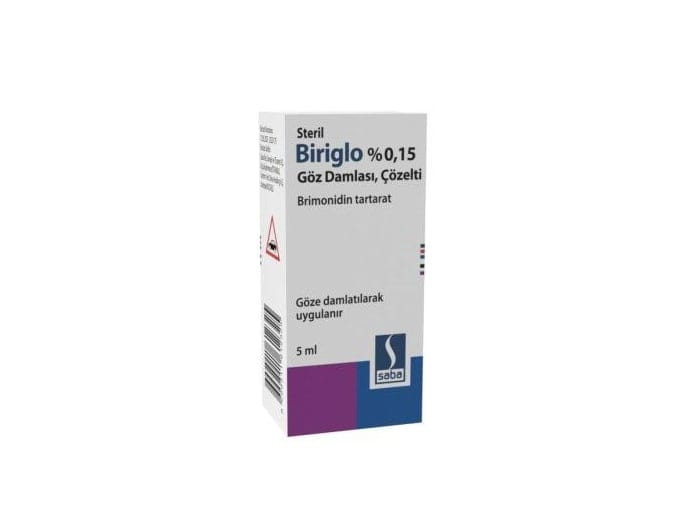

Biriglo %0,15 Göz Damlası, Çözelti, 1 ADET

Ne için kullanılır
KT · Bölüm 1BİRİGLO, plastik bir şişe içinde 5 ml çözelti olarak kullanıma sunulmuş bir göz damlasıdır.
BİRİGLO, bir antiglokom preparatıdır. Etkin maddesi brimonidindir ve alfa adrenerjik reseptör agonisti denilen bir ilaç grubuna dahildir.
BİRİGLO, göz içindeki yüksek basıncı düşürmek için kullanılır. Bu yüksek basınç, glokom denilen hastalığa neden olabilir. Yüksek basınç düşürülmezse, görmenizde hasar oluşturabilir.